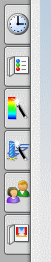
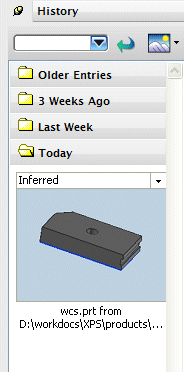
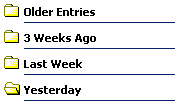

资源条 – 资源板
资源板提供了一些标准的并且经常使用的操作功能。用户可以通过拖拽或是复制粘贴方式将其放置到图形窗口中。

历史记录资源板 使用户能够迅速打开近期使用过的文件。使用它重新加载最近使用过的部件，或是重复添加一些资源板项到模型中。
使用户能够迅速打开近期使用过的文件。使用它重新加载最近使用过的部件，或是重复添加一些资源板项到模型中。

历史记录资源板将根据部件上一次保存的时间，将其分为“今天”、“昨天”、“上周”等类别。

|
注释 |
本课程中仅涉及了关于资源板设置及应用的一小部分，更多细节在制图和外观造型设计模块中有介绍，也可参阅 NX 8帮助文档。 |